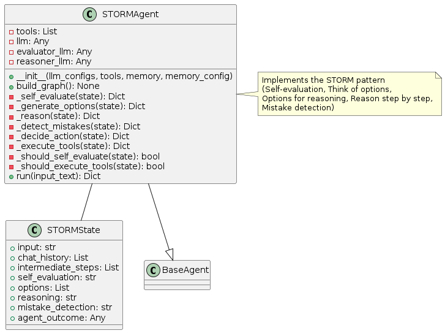
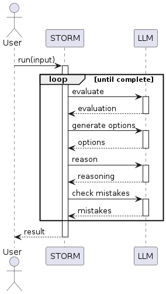
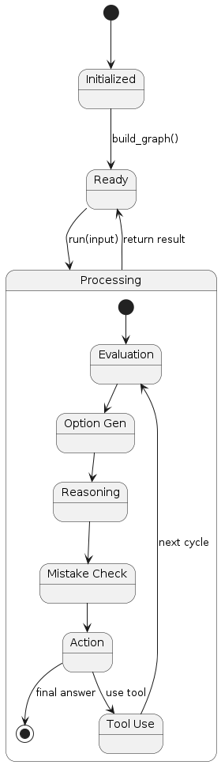

STORM Pattern
Overview
The STORM (Self-evaluation, Think of options, Options for reasoning, Reason step by step, Mistake detection) pattern implements a comprehensive metacognitive framework for agent reasoning. This pattern involves:
Self-evaluation: The agent evaluates its current understanding and approach
Think of options: Multiple solution options are generated
Options for reasoning: Different reasoning pathways are considered
Reason step by step: Detailed step-by-step reasoning is performed
Mistake detection: The agent actively looks for errors in its reasoning
The key innovation is the structured metacognitive process that emphasizes self-evaluation, exploring multiple options, and error detection.
Diagrams
Class Structure

The STORM pattern is implemented through:
STORMState: Maintains state for self-evaluation, options, reasoning, and mistake detection
STORMAgent: Implements the STORM metacognitive process
BaseAgent: The abstract base class from which the STORM agent inherits
Execution Flow

The execution flow follows:
User provides input to the STORMAgent
The agent performs self-evaluation of its understanding
Multiple solution options are generated
Detailed reasoning is performed for each option
The agent actively checks for potential mistakes in its reasoning
Based on this analysis, the agent decides on the best action
If needed, tools are executed
The cycle repeats until a final answer is determined
Final result is returned to the user
State Transitions

The STORM pattern transitions through these states:
Initialized: Agent is created but not yet ready
Ready: Agent is ready to process input
Processing: Agent is actively working on the task
Self Evaluation: Agent is evaluating its understanding
Options Generation: Agent is generating multiple approaches
Reasoning: Agent is reasoning through options in detail
Mistake Detection: Agent is checking for reasoning errors
Action Decision: Agent is selecting the best action
Tool Execution: Agent is using a tool if needed
Final state is reached when the agent determines a final answer
Use Cases
Critical Reasoning Tasks: For problems requiring high accuracy and reliability
Complex Decision Making: When multiple factors need careful consideration
Risk Assessment: For situations where errors could have significant consequences
Expert Systems: For domains requiring expert-level reasoning
Educational Applications: For teaching structured reasoning approaches
Research Problems: When thorough exploration of alternatives is important
Implementation Guide
Here’s a simple example of using the STORMAgent:
from agent_patterns.patterns import STORMAgent
from agent_patterns.core.tools import ToolRegistry
from agent_patterns.core.memory import CompositeMemory, SemanticMemory
from langchain.tools import tool
# Define a few tools
@tool
def search(query: str) -> str:
"""Search for information about a topic."""
return f"Results for {query}: Some relevant information..."
@tool
def verify_fact(statement: str) -> str:
"""Check if a statement is factually correct."""
return f"Verification of '{statement}': [verification result]"
# Create tool registry
tool_registry = ToolRegistry([search, verify_fact])
# Create memory system
memory = CompositeMemory({
"semantic": SemanticMemory() # For storing reasoning patterns
})
# Configure the LLMs
llm_configs = {
"default": {
"provider": "openai",
"model": "gpt-4o",
"temperature": 0.7
},
"evaluator": {
"provider": "openai",
"model": "gpt-4o",
"temperature": 0.4
},
"reasoner": {
"provider": "openai",
"model": "gpt-4o",
"temperature": 0.3 # Lower temperature for more focused reasoning
}
}
# Initialize the STORM agent
agent = STORMAgent(
llm_configs=llm_configs,
tool_provider=tool_registry,
memory=memory
)
# Run the agent on a complex reasoning task
result = agent.run("Evaluate whether increasing interest rates will help control inflation in the current economic climate.")
print(result)
Example References
The examples directory contains implementations of the STORM pattern:
examples/storm_basic.py: Basic implementation of the STORM patternexamples/storm_advanced.py: Implementation with enhanced mistake detection
Best Practices
Design specialized prompts for each phase of the STORM process
Consider using different LLM configurations for different STORM components
Implement structured output formats for better tracking of the reasoning process
Balance thoroughness against efficiency based on task requirements
Store successful reasoning patterns in memory for future reference
Implement a scoring system to evaluate different reasoning pathways
Consider multi-turn conversation for complex reasoning tasks